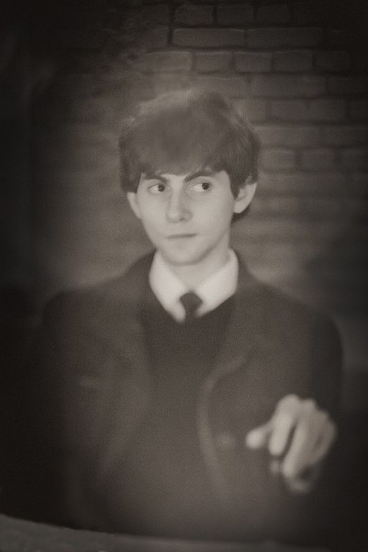

Info

Aspiring web developer from Saratov, Russia. Looking forward to improving this CV in the near future.
Skills
- HTML: basic
- CSS: basic
- Touch typing: getting better
Contacts
- Email: epistolascribite@gmail.com
- Discord: caseyalistergreen#8069
Code example
function even_or_odd(number) {
if (number % 2 == 0) {
return "Even";
} else {
return "Odd";
}
}Projects
First week taskEducation
Russian State Social University, 2007—2011, Bachelor in Psychology.
English: B1